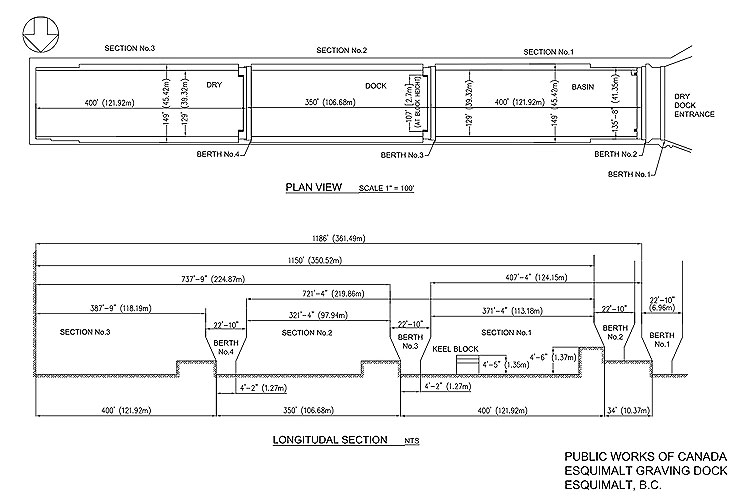

Dock Dimensions
The image above shows the plan and longitudinal views of the drydock.
The Esquimalt Graving Dock's dimensions measure 357.5 metres by 38.4 metres – or about 1,200 feet long by 135 feet wide. The facility is provided with two floating caisson gates, which can be positioned at any of four alternative locations to partition the drydock into two dock sections. The top of the dry dock floor slab is -10.52 m and the granite coping (top of the dock retaining walls) is at 4.42 m.
Please contact EGD for more details on the dock dimensions.